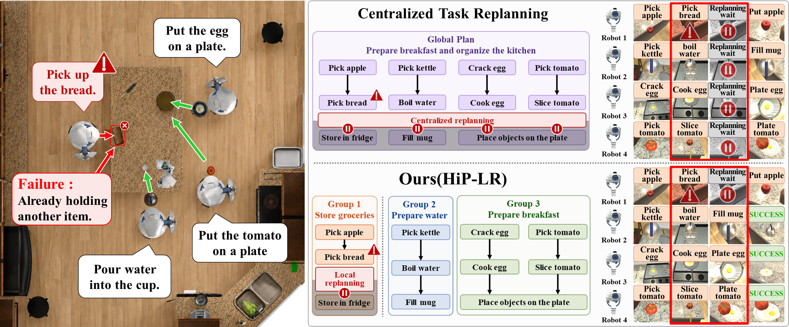

Findings of the ACL: EMNLP 2026
Large Language Model (LLM)-driven multi-robot systems struggle with long-horizon tasks due to planning and execution complexities. As task dependencies grow, centralized planners suffer from context explosion and hallucinations, while minor runtime errors can disrupt the entire operation. Current monolithic methods overload LLMs and cause unnecessary global halts during error recovery. To address this, we introduce Hierarchical Planning with Localized Failure Recovery (HiP-LR). HiP-LR uses a two-level hierarchy to divide complex instructions into dependency-isolated subtask groups. A central agent allocates global tasks, while local agents execute specific plans, keeping LLM contexts compact. Furthermore, a PDDL-based dual-memory structure enables failure-localized replanning: if an error occurs, only the affected group pauses to replan, allowing others to continue uninterrupted. Evaluated on MAP-THOR, HiP-LR improves the task success rate by 38% and reduces replan-wait costs by 90% over state-of-the-art baselines. Furthermore, HiP-LR demonstrates highly robust recovery capabilities on our novel failure-injection benchmark, RECAP-THOR.

@inproceedings{hiplr2026,
title = "HiP-LR: Hierarchical Planning with Localized Failure
Recovery for Long-Horizon Multi-Robot Tasks",
author = "",
booktitle = "Findings of the Association for Computational
Linguistics: EMNLP 2026",
year = "2026"}